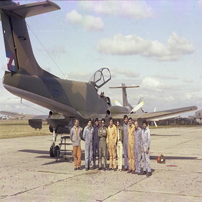

PUCARA
El Pucará, así llamado por el nombre de las fortalezas Quechúa, es un avión de ataque a tierra biturbo-hélice construido para la Fuerza Aérea Argentina por la Fábrica Militar de Aviones (FMA). Realizo su primer vuelo el 28/08/1969. Entró en combate en la Operación Independencia contra el Ejército Revolucionario del Pueblo y en la Guerra de las Malvinas. Obteniendo el certificado internacional de “combat proved” o probado en combate. También participó en la lucha de contrainsurgencia de la Fuerza Aérea Colombiana y por la Fuerza Aérea de Sri Lanka.
La Fuerza Aérea Argentina presentó a principios de 1968 los requerimientos al Área Material Córdoba para la construcción de esta aeronave. A posterior, la FMA comenzó a desarrollar el proyecto focalizándose en que fuera apta para acciones de reconocimiento ofensivo y ataque con gran capacidad de fuego aire-tierra.
Entre 1974 y 1989 , se fabricaron cerca de 100 unidades.
Durante el conflicto de Malvinas en 1982 efectuó 69 salidas de reconocimiento ofensivo, interdicción aérea y apoyo de fuego cercano y se destacó por su excelente capacidad operativa a alturas inferiores a 15 metros, sobre terrenos ondulados y con malas condiciones meteorológicas.
Por José Martinez
27/12/1967 Remolcado por un DC-3 inicia los vuelos de ensayo el planeador del avión AX-2 .
20/08/1969 Primer vuelo en privado del AX-2 piloteado por el M.D. Roberto Starc.
21/08/1969 El comandante en jefe de la FAA Brig. Gral. Jorge Miguel Martínez Zuviría asiste al segundo vuelo en privado del AX-2.
10/10/1969 Presentación oficial de AX-2 bautizado IA-58 pucara con motivo de cumplir la fábrica sus 42 aniversario y celebrarse el día de la industria aeronáutica, en ese acto hace demostración en vuelo el IA-50 GII equipado con esquíes y el último avión gloster inspeccionado en la FMA. Asisten a la presentación el ministro de defensa Dr. Rafael Cáceres Moiné, el comandante en jefe Brig. Gral. Jorge Miguel Martínez Zuviría, comandante de material Brig D. Jorge Sixto Hernández y el director de la fábrica Comodoro Horacio Augusto Guerra.
24/10/1970 Se presenta en BS AS el segundo prototipo al señor presidente Gral Roberto M. Lévington
14/05/1971 Se presenta en vuelo el IA-58 en Asunción del Paraguay con motivo de la reunión de comandantes en jefe de las fuerzas aéreas de los países pertenecientes a la O.E.A.
31/05/1971 Es embarcado en un Hércules un IA-58 con destino a Francia para realizar ensayos de vibraciones.
16/03/1972 En la escuela de aviación se hace un vuelo de demostración para el jefe de estado mayor de USAF John D. Ryan.
